Avalonia samples
Short Avalonia programs — controls, layout, drawing, text, input, windows, themes and bindings.
Run one with ring 02_button_click.ring from samples/UsingDotNet/tests/packages/AvaloniaSamples; with --selftest it checks itself and closes. See the Avalonia guide for the concepts.
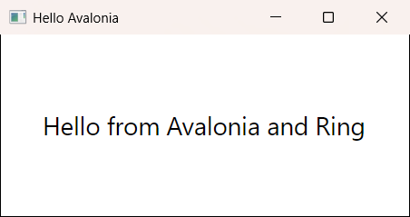
Hello window
The smallest Avalonia program: a window with a text
cd samples/UsingDotNet/tests/packages/AvaloniaSamples then ring 01_hello_window.ringSource code
# The smallest Avalonia program: a window with a text
load "avalonia.ring"
avUse()
oWindow = avWindow("Hello Avalonia",360,160)
oText = avText("Hello from Avalonia and Ring")
oText.FontSize = 22
oText.HorizontalAlignment = "Center"
oText.VerticalAlignment = "Center"
oWindow.Content = oText
avRun(oWindow)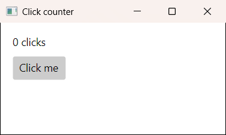
Button click
A button counts its clicks (the Click event runs Ring code)
cd samples/UsingDotNet/tests/packages/AvaloniaSamples then ring 02_button_click.ringSource code
# A button counts its clicks (the Click event runs Ring code)
load "avalonia.ring"
avUse()
nClicks = 0
oWindow = avWindow("Click counter",300,150)
oPanel = new StackPanel()
oPanel {
Spacing = 10
Margin = avThickness(16)
}
oWindow.Content = oPanel
oInfo = avText("0 clicks")
oButton = avButton("Click me","clicked()")
oPanel {
Children.Add(oInfo)
Children.Add(oButton)
}
avRun(oWindow)
# --------------------------------------------------------------------------
func clicked
nClicks++
oInfo.Text = "" + nClicks + " clicks"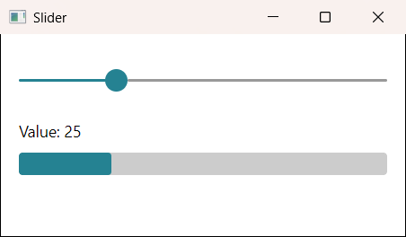
Slider text
A slider and a progress bar that follow each other: the ValueChanged event of the slider
cd samples/UsingDotNet/tests/packages/AvaloniaSamples then ring 03_slider_text.ringSource code
# A slider and a progress bar that follow each other: the ValueChanged event of the slider
load "avalonia.ring"
avUse()
oWindow = avWindow("Slider",360,180)
oPanel = new StackPanel()
oPanel {
Spacing = 10
Margin = avThickness(16)
}
oWindow.Content = oPanel
oSlider = new Slider()
oSlider {
Minimum = 0
Maximum = 100
Value = 25
setValueChangedEvent("moved()")
}
oText = avText("Value: 25")
oBar = new ProgressBar()
oBar {
Minimum = 0
Maximum = 100
Value = 25
Height = 20
}
oPanel {
Children.Add(oSlider)
Children.Add(oText)
Children.Add(oBar)
}
avRun(oWindow)
# --------------------------------------------------------------------------
func moved
oText.Text = "Value: " + floor(oSlider.Value)
oBar.Value = oSlider.Value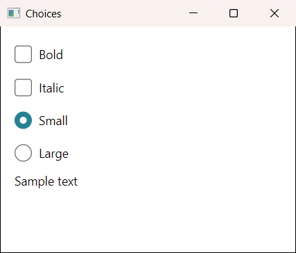
Checkbox radio
Check boxes and radio buttons: the IsCheckedChanged event
cd samples/UsingDotNet/tests/packages/AvaloniaSamples then ring 04_checkbox_radio.ringSource code
# Check boxes and radio buttons: the IsCheckedChanged event
load "avalonia.ring"
avUse()
oWindow = avWindow("Choices",340,260)
oPanel = new StackPanel()
oPanel {
Spacing = 6
Margin = avThickness(16)
}
oWindow.Content = oPanel
oBold = new CheckBox()
oBold {
Content = "Bold"
setIsCheckedChangedEvent("changed()")
}
oItalic = new CheckBox()
oItalic {
Content = "Italic"
setIsCheckedChangedEvent("changed()")
}
oSmall = new RadioButton()
oSmall {
Content = "Small"
GroupName = "size"
IsChecked = True
setIsCheckedChangedEvent("changed()")
}
oLarge = new RadioButton()
oLarge {
Content = "Large"
GroupName = "size"
setIsCheckedChangedEvent("changed()")
}
oSample = avText("Sample text")
oPanel {
Children.Add(oBold)
Children.Add(oItalic)
Children.Add(oSmall)
Children.Add(oLarge)
Children.Add(oSample)
}
changed()
avRun(oWindow)
# --------------------------------------------------------------------------
func changed
if oBold.IsChecked
oSample.FontWeight = "Bold"
else
oSample.FontWeight = "Normal"
ok
if oItalic.IsChecked
oSample.FontStyle = "Italic"
else
oSample.FontStyle = "Normal"
ok
if oLarge.IsChecked
oSample.FontSize = 28
else
oSample.FontSize = 14
ok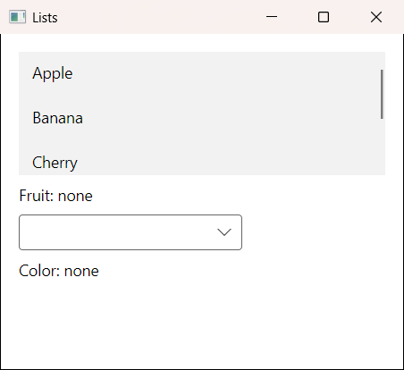
List combo
A list box and a combo box: the SelectionChanged event
cd samples/UsingDotNet/tests/packages/AvaloniaSamples then ring 05_list_combo.ringSource code
# A list box and a combo box: the SelectionChanged event
load "avalonia.ring"
avUse()
oWindow = avWindow("Lists",360,300)
oPanel = new StackPanel()
oPanel {
Spacing = 8
Margin = avThickness(16)
}
oWindow.Content = oPanel
oList = new ListBox()
oList {
Height = 110
setSelectionChangedEvent("listChanged()")
}
for cFruit in ["Apple","Banana","Cherry","Date","Elderberry"]
oList.Items.Add(cFruit)
next
oCombo = new ComboBox()
oCombo {
Width = 200
setSelectionChangedEvent("comboChanged()")
}
for cColor in ["Red","Green","Blue"]
oCombo.Items.Add(cColor)
next
oFruit = avText("Fruit: none")
oColor = avText("Color: none")
oPanel {
Children.Add(oList)
Children.Add(oFruit)
Children.Add(oCombo)
Children.Add(oColor)
}
avRun(oWindow)
# --------------------------------------------------------------------------
func listChanged
if oList.SelectedIndex >= 0
oFruit.Text = "Fruit: " + oList.SelectedItem
ok
func comboChanged
if oCombo.SelectedIndex >= 0
oColor.Text = "Color: " + oCombo.SelectedItem
ok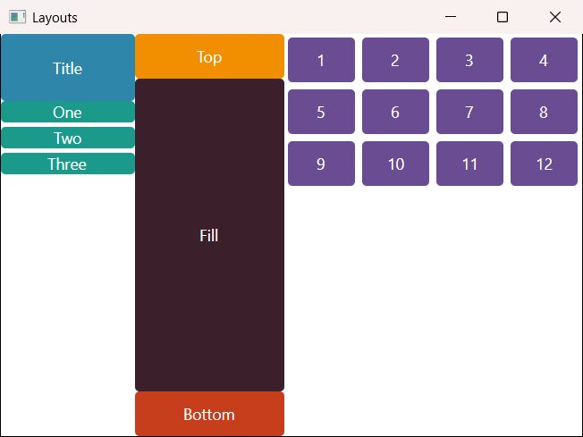
Layouts
Layouts: a Grid with sized columns and rows, a DockPanel, a WrapPanel and a StackPanel
cd samples/UsingDotNet/tests/packages/AvaloniaSamples then ring 06_layouts.ringSource code
# Layouts: a Grid with sized columns and rows, a DockPanel, a WrapPanel and a StackPanel
load "avalonia.ring"
avUse()
oWindow = avWindow("Layouts",520,360)
oGrid = new Grid()
oGrid.ColumnDefinitions = (new ColumnDefinitions).Parse("120,*,2*")
oGrid.RowDefinitions = (new RowDefinitions).Parse("60,*")
oWindow.Content = oGrid
# the cell that is 120 wide and 60 high: a title
oTitle = box("Title","#2E86AB")
oGrid.SetColumn(oTitle,0)
oGrid.SetRow(oTitle,0)
# a dock panel: a header on top, a footer at the bottom, the rest in the middle
oDock = new DockPanel()
oHeader = box("Top","#F18F01")
oFooter = box("Bottom","#C73E1D")
oMiddle = box("Fill","#3B1F2B")
oHeader.Height = 40
oFooter.Height = 40
oDock.SetDock(oHeader,"Top")
oDock.SetDock(oFooter,"Bottom")
oDock {
Children.Add(oHeader)
Children.Add(oFooter)
Children.Add(oMiddle)
}
oGrid.SetColumn(oDock,1)
oGrid.SetRow(oDock,0)
oGrid.SetRowSpan(oDock,2)
# a wrap panel: boxes that go to the next line when the line is full
oWrap = new WrapPanel()
for nBox = 1 to 12
oSmall = box("" + nBox,"#6A4C93")
oSmall.Width = 60
oSmall.Height = 40
oSmall.Margin = avThickness(3)
oWrap.Children.Add(oSmall)
next
oGrid.SetColumn(oWrap,2)
oGrid.SetRow(oWrap,0)
oGrid.SetRowSpan(oWrap,2)
# a stack panel in the first column, below the title
oStack = new StackPanel()
oStack.Spacing = 4
for cName in ["One","Two","Three"]
oStack.Children.Add(box(cName,"#1B998B"))
next
oGrid.SetColumn(oStack,0)
oGrid.SetRow(oStack,1)
oGrid.Children.Add(oTitle)
oGrid.Children.Add(oDock)
oGrid.Children.Add(oWrap)
oGrid.Children.Add(oStack)
avRun(oWindow)
# --------------------------------------------------------------------------
# a colored border with a centered text
func box cText, cColor
oBorder = new Border()
oBorder.Background = avBrush(cColor)
oBorder.CornerRadius = (new CornerRadius).Parse("4")
oLabel = avText(cText)
oLabel.Foreground = avBrush("White")
oLabel.HorizontalAlignment = "Center"
oLabel.VerticalAlignment = "Center"
oBorder.Child = oLabel
return oBorder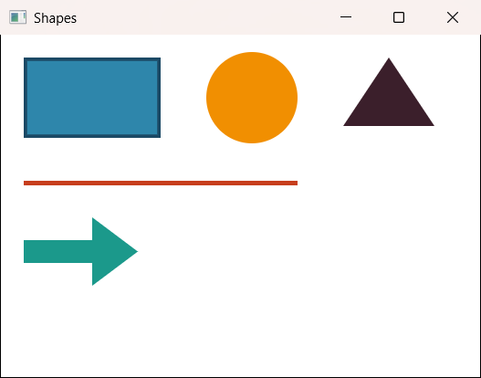
Shapes
Shapes on a Canvas: a rectangle, an ellipse, a line, a polygon and a path made from path text
cd samples/UsingDotNet/tests/packages/AvaloniaSamples then ring 07_shapes.ringSource code
# Shapes on a Canvas: a rectangle, an ellipse, a line, a polygon and a path made from path text
load "avalonia.ring"
avUse()
oWindow = avWindow("Shapes",420,300)
oCanvas = new Canvas()
oWindow.Content = oCanvas
oBox = new Rectangle()
oBox {
Width = 120
Height = 70
Fill = avBrush("#2E86AB")
Stroke = avBrush("#1B4965")
StrokeThickness = 3
}
oCanvas.SetLeft(oBox,20)
oCanvas.SetTop(oBox,20)
oCircle = new Ellipse()
oCircle {
Width = 80
Height = 80
Fill = avBrush("#F18F01")
}
oCanvas.SetLeft(oCircle,180)
oCanvas.SetTop(oCircle,15)
oLine = new Line()
oLine {
StartPoint = (new Point).@New([ :x = 20, :y = 130 ])
EndPoint = (new Point).@New([ :x = 260, :y = 130 ])
Stroke = avBrush("#C73E1D")
StrokeThickness = 4
}
oTriangle = new Polygon()
oTriangle {
Fill = avBrush("#3B1F2B")
}
for cPoint in ["0,60","40,0","80,60"]
oTriangle.Points.Add((new Point).Parse(cPoint))
next
oCanvas.SetLeft(oTriangle,300)
oCanvas.SetTop(oTriangle,20)
oArrow = new ShapesPath()
oArrow {
Data = (new Geometry).Parse("M 0,20 L 60,20 L 60,0 L 100,30 L 60,60 L 60,40 L 0,40 Z")
Fill = avBrush("#1B998B")
}
oCanvas.SetLeft(oArrow,20)
oCanvas.SetTop(oArrow,160)
oCanvas {
Children.Add(oBox)
Children.Add(oCircle)
Children.Add(oLine)
Children.Add(oTriangle)
Children.Add(oArrow)
}
avRun(oWindow)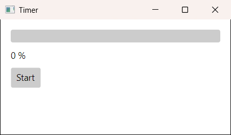
Timer progress
A timer (DispatcherTimer) fills a progress bar; a button starts and stops it
cd samples/UsingDotNet/tests/packages/AvaloniaSamples then ring 09_timer_progress.ringSource code
# A timer (DispatcherTimer) fills a progress bar; a button starts and stops it
load "avalonia.ring"
avUse()
oWindow = avWindow("Timer",360,180)
oPanel = new StackPanel()
oPanel {
Spacing = 10
Margin = avThickness(16)
}
oWindow.Content = oPanel
oBar = new ProgressBar()
oBar {
Minimum = 0
Maximum = 100
Height = 20
}
oPercent = avText("0 %")
oToggle = avButton("Start","toggle()")
oTimer = new DispatcherTimer()
oTimer {
Interval = dnStatic("System.TimeSpan","FromMilliseconds",[100])
setTickEvent("tick()")
}
oPanel {
Children.Add(oBar)
Children.Add(oPercent)
Children.Add(oToggle)
}
avRun(oWindow)
# --------------------------------------------------------------------------
func toggle
if oTimer.IsEnabled
oTimer.Stop()
oToggle.Content = "Start"
else
oTimer.Start()
oToggle.Content = "Stop"
ok
func tick
if oBar.Value >= 100
oTimer.Stop()
oToggle.Content = "Start"
oBar.Value = 0
else
oBar.Value += 5
ok
oPercent.Text = "" + floor(oBar.Value) + " %"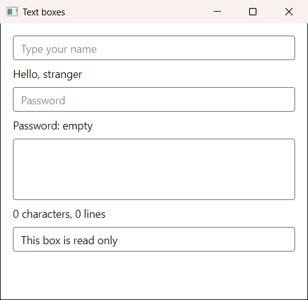
Textbox echo
Text boxes: the TextChanged event, a password box, a multi-line box, a read-only box and the Watermark
cd samples/UsingDotNet/tests/packages/AvaloniaSamples then ring 10_textbox_echo.ringSource code
# Text boxes: the TextChanged event, a password box, a multi-line box, a read-only box and the Watermark
load "avalonia.ring"
avUse()
oWindow = avWindow("Text boxes",400,360)
oPanel = new StackPanel()
oPanel {
Spacing = 8
Margin = avThickness(16)
}
oWindow.Content = oPanel
oName = new TextBox()
oName {
Watermark = "Type your name"
setTextChangedEvent("nameChanged()")
}
oGreeting = avText("Hello, stranger")
oSecret = new TextBox()
oSecret {
PasswordChar = "*"
Watermark = "Password"
setTextChangedEvent("secretChanged()")
}
oStrength = avText("Password: empty")
oNotes = new TextBox()
oNotes {
AcceptsReturn = True
TextWrapping = "Wrap"
Height = 80
setTextChangedEvent("notesChanged()")
}
oCount = avText("0 characters, 0 lines")
oLocked = new TextBox()
oLocked {
Text = "This box is read only"
IsReadOnly = True
}
oPanel {
Children.Add(oName)
Children.Add(oGreeting)
Children.Add(oSecret)
Children.Add(oStrength)
Children.Add(oNotes)
Children.Add(oCount)
Children.Add(oLocked)
}
avRun(oWindow)
# --------------------------------------------------------------------------
# the text of a box: a box that has no text gives null, which is not a text
func textOf oBox
cText = oBox.Text
if isstring(cText)
return cText
ok
return ""
func nameChanged
cName = textOf(oName)
if cName = ""
oGreeting.Text = "Hello, stranger"
else
oGreeting.Text = "Hello, " + cName + "!"
ok
func secretChanged
nLength = len(textOf(oSecret))
if nLength = 0
oStrength.Text = "Password: empty"
but nLength < 6
oStrength.Text = "Password: weak (" + nLength + ")"
else
oStrength.Text = "Password: good (" + nLength + ")"
ok
func notesChanged
cText = textOf(oNotes)
nLines = 0
if len(cText) > 0
nLines = len(str2list(substr(cText,char(13),"")))
ok
oCount.Text = "" + len(cText) + " characters, " + nLines + " lines"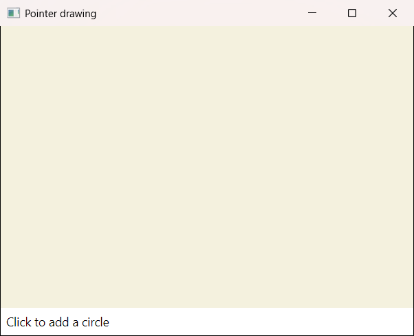
Pointer drawing
Drawing with the pointer: a click on the canvas adds a circle, a drag draws a line; the pointer events give the position
cd samples/UsingDotNet/tests/packages/AvaloniaSamples then ring 11_pointer_drawing.ringSource code
# Drawing with the pointer: a click on the canvas adds a circle, a drag draws a line; the pointer events give the position
load "avalonia.ring"
avUse()
oWindow = avWindow("Pointer drawing",480,360)
oDock = new DockPanel()
oWindow.Content = oDock
oInfo = avText("Click to add a circle")
oInfo.Margin = avThickness(6)
oDock.SetDock(oInfo,"Bottom")
oCanvas = new Canvas()
oCanvas.Background = avBrush("#F4F1DE")
oCanvas {
setPointerPressedEvent("pressed(aDotNetArgs[2].GetPosition(oCanvas))")
setPointerMovedEvent("moved(aDotNetArgs[2].GetPosition(oCanvas))")
setPointerReleasedEvent("released(aDotNetArgs[2].GetPosition(oCanvas))")
}
oDock {
Children.Add(oInfo)
Children.Add(oCanvas)
}
aColors = ["#E07A5F","#3D405B","#81B29A","#F2CC8F"]
nCircles = 0
lDown = False
oStart = ""
avRun(oWindow)
# --------------------------------------------------------------------------
# each handler gets the position of the pointer on the canvas (a point)
func pressed oPosition
lDown = True
oStart = oPosition
func moved oPosition
oInfo.Text = "x = " + floor(oPosition.X) + ", y = " + floor(oPosition.Y)
func released oEnd
if not lDown
return
ok
lDown = False
if fabs(oEnd.X - oStart.X) < 4 and fabs(oEnd.Y - oStart.Y) < 4
addCircle(oEnd.X,oEnd.Y)
else
addLine(oStart,oEnd)
ok
func addCircle nX, nY
nCircles++
oCircle = new Ellipse()
oCircle.Width = 30
oCircle.Height = 30
oCircle.Fill = avBrush(aColors[(nCircles - 1) % len(aColors) + 1])
oCanvas.SetLeft(oCircle,nX - 15)
oCanvas.SetTop(oCircle,nY - 15)
oCanvas.Children.Add(oCircle)
oInfo.Text = "" + nCircles + " circles"
func addLine oFrom, oTo
oLine = new Line()
oLine.StartPoint = oFrom
oLine.EndPoint = oTo
oLine.Stroke = avBrush("#3D405B")
oLine.StrokeThickness = 3
oCanvas.Children.Add(oLine)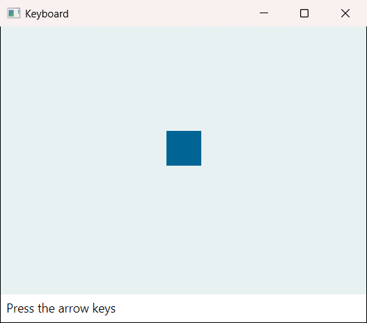
Keyboard
The keyboard: the arrow keys move a square on a canvas, the other keys are shown (the KeyDown event of the window)
cd samples/UsingDotNet/tests/packages/AvaloniaSamples then ring 12_keyboard.ringSource code
# The keyboard: the arrow keys move a square on a canvas, the other keys are shown (the KeyDown event of the window)
load "avalonia.ring"
avUse()
oWindow = avWindow("Keyboard",420,340)
oDock = new DockPanel()
oWindow.Content = oDock
oInfo = avText("Press the arrow keys")
oInfo.Margin = avThickness(6)
oDock.SetDock(oInfo,"Bottom")
oCanvas = new Canvas()
oCanvas.Background = avBrush("#E8F1F2")
oSquare = new Rectangle()
oSquare {
Width = 40
Height = 40
Fill = avBrush("#006494")
}
nX = 190
nY = 120
oCanvas.SetLeft(oSquare,nX)
oCanvas.SetTop(oSquare,nY)
oCanvas.Children.Add(oSquare)
oDock {
Children.Add(oInfo)
Children.Add(oCanvas)
}
oWindow.setKeyDownEvent("keyDown(aDotNetArgs[2].Key)")
avRun(oWindow)
# --------------------------------------------------------------------------
# the name of the key: Left, Right, Up, Down, A, Space ...
func keyDown cKey
switch cKey
on "Left"
nX = max(0,nX - 10)
on "Right"
nX = min(380,nX + 10)
on "Up"
nY = max(0,nY - 10)
on "Down"
nY = min(240,nY + 10)
other
oInfo.Text = "Key: " + cKey
return
off
oCanvas.SetLeft(oSquare,nX)
oCanvas.SetTop(oSquare,nY)
oInfo.Text = "The square is at " + nX + ", " + nY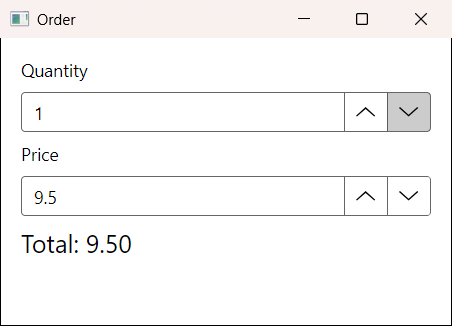
Numeric updown
Number boxes (NumericUpDown): a quantity and a price give a total; the ValueChanged event runs when a value changes
cd samples/UsingDotNet/tests/packages/AvaloniaSamples then ring 13_numeric_updown.ringSource code
# Number boxes (NumericUpDown): a quantity and a price give a total; the ValueChanged event runs when a value changes
load "avalonia.ring"
avUse()
oWindow = avWindow("Order",360,230)
oPanel = avStack(8,16)
oWindow.Content = oPanel
oQuantity = numberBox(1,1,99,1)
oPrice = numberBox(9.5,0,1000,0.5)
oTotal = avText("")
oTotal.FontSize = 20
oPanel {
Children.Add(avText("Quantity"))
Children.Add(oQuantity)
Children.Add(avText("Price"))
Children.Add(oPrice)
Children.Add(oTotal)
}
showTotal()
avRun(oWindow)
# --------------------------------------------------------------------------
# a number box with a start value, a range and a step
func numberBox nValue, nMinimum, nMaximum, nStep
oBox = new NumericUpDown()
oBox {
Minimum = nMinimum
Maximum = nMaximum
Increment = nStep
Value = nValue
setValueChangedEvent("showTotal()")
}
return oBox
func showTotal
oTotal.Text = "Total: " + (oQuantity.Value * oPrice.Value)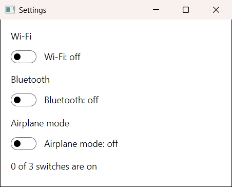
Toggle switch
Toggle switches: a settings panel; each switch has a text for each state
cd samples/UsingDotNet/tests/packages/AvaloniaSamples then ring 14_toggle_switch.ringSource code
# Toggle switches: a settings panel; each switch has a text for each state
load "avalonia.ring"
avUse()
oWindow = avWindow("Settings",360,260)
oPanel = avStack(10,16)
oWindow.Content = oPanel
oWifi = makeSwitch("Wi-Fi")
oBluetooth = makeSwitch("Bluetooth")
oAirplane = makeSwitch("Airplane mode")
oStatus = avText("")
lBusy = False
oPanel {
Children.Add(oWifi)
Children.Add(oBluetooth)
Children.Add(oAirplane)
Children.Add(oStatus)
}
changed()
avRun(oWindow)
# --------------------------------------------------------------------------
func makeSwitch cName
oSwitch = new ToggleSwitch()
oSwitch {
Content = cName
OnContent = cName + ": on"
OffContent = cName + ": off"
setIsCheckedChangedEvent("changed()")
}
return oSwitch
# the airplane mode turns the other switches off
func changed
if lBusy
return
ok
lBusy = True
if oAirplane.IsChecked
oWifi.IsChecked = False
oBluetooth.IsChecked = False
oWifi.IsEnabled = False
oBluetooth.IsEnabled = False
else
oWifi.IsEnabled = True
oBluetooth.IsEnabled = True
ok
nOn = 0
for oOne in [oWifi,oBluetooth,oAirplane]
if oOne.IsChecked
nOn++
ok
next
oStatus.Text = "" + nOn + " of 3 switches are on"
lBusy = False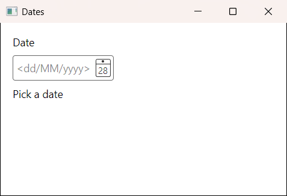
Date picker
A date picker (CalendarDatePicker): the days to a date and the weekday of a date
cd samples/UsingDotNet/tests/packages/AvaloniaSamples then ring 15_date_picker.ringSource code
# A date picker (CalendarDatePicker): the days to a date and the weekday of a date
load "avalonia.ring"
avUse()
oWindow = avWindow("Dates",380,230)
oPanel = avStack(8,16)
oWindow.Content = oPanel
oPicker = new CalendarDatePicker()
oPicker.setSelectedDateChangedEvent("picked()")
oDay = avText("Pick a date")
oDays = avText("")
oPanel {
Children.Add(avText("Date"))
Children.Add(oPicker)
Children.Add(oDay)
Children.Add(oDays)
}
avRun(oWindow)
# --------------------------------------------------------------------------
func picked
oDate = oPicker.SelectedDate
if oDate.isNull()
oDay.Text = "Pick a date"
oDays.Text = ""
return
ok
oDay.Text = "" + oDate.DayOfWeek + ", " + oDate.Day + "/" + oDate.Month + "/" + oDate.Year
nDays = floor(oDate.Subtract(dnStatic("System.DateTime","get_Today",[])).TotalDays)
if nDays > 0
oDays.Text = "" + nDays + " days from today"
but nDays < 0
oDays.Text = "" + (-nDays) + " days ago"
else
oDays.Text = "today"
ok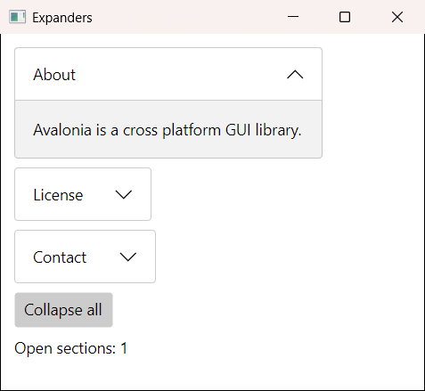
Expander
Expanders: sections that open and close (the Expanded and Collapsed events)
cd samples/UsingDotNet/tests/packages/AvaloniaSamples then ring 16_expander.ringSource code
# Expanders: sections that open and close (the Expanded and Collapsed events)
load "avalonia.ring"
avUse()
oWindow = avWindow("Expanders",380,320)
oPanel = avStack(8,12)
oWindow.Content = oPanel
oStatus = avText("Nothing opened yet")
oAbout = section("About","Avalonia is a cross platform GUI library.")
oLicense = section("License","MIT")
oContact = section("Contact","Ask the Ring community.")
oAbout.IsExpanded = True
oPanel {
Children.Add(oAbout)
Children.Add(oLicense)
Children.Add(oContact)
Children.Add(avButton("Collapse all","collapseAll()"))
Children.Add(oStatus)
}
avRun(oWindow)
# --------------------------------------------------------------------------
func section cHeader, cText
oSection = new Expander()
oSection {
Header = cHeader
Content = avText(cText)
setExpandedEvent("opened()")
setCollapsedEvent("closed()")
}
return oSection
func opened
oStatus.Text = "Open sections: " + openCount()
func closed
oStatus.Text = "Open sections: " + openCount()
func openCount
nOpen = 0
for oOne in [oAbout,oLicense,oContact]
if oOne.IsExpanded
nOpen++
ok
next
return nOpen
func collapseAll
oAbout.IsExpanded = False
oLicense.IsExpanded = False
oContact.IsExpanded = False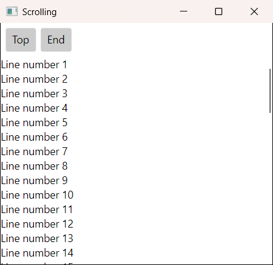
Scrollviewer
A scroll viewer: a long list of lines in a small window; buttons scroll to the top and to the end
cd samples/UsingDotNet/tests/packages/AvaloniaSamples then ring 17_scrollviewer.ringSource code
# A scroll viewer: a long list of lines in a small window; buttons scroll to the top and to the end
load "avalonia.ring"
avUse()
oWindow = avWindow("Scrolling",360,320)
oDock = new DockPanel()
oWindow.Content = oDock
oBar = avRow(6)
oBar.Margin = avThickness(6)
oDock.SetDock(oBar,"Top")
oBar {
Children.Add(avButton("Top","toTop()"))
Children.Add(avButton("End","toEnd()"))
}
oScroll = new ScrollViewer()
oLines = new StackPanel()
for nLine = 1 to 60
oLines.Children.Add(avText("Line number " + nLine))
next
oScroll.Content = oLines
oDock {
Children.Add(oBar)
Children.Add(oScroll)
}
avRun(oWindow)
# --------------------------------------------------------------------------
func toTop
oScroll.ScrollToHome()
func toEnd
oScroll.ScrollToEnd()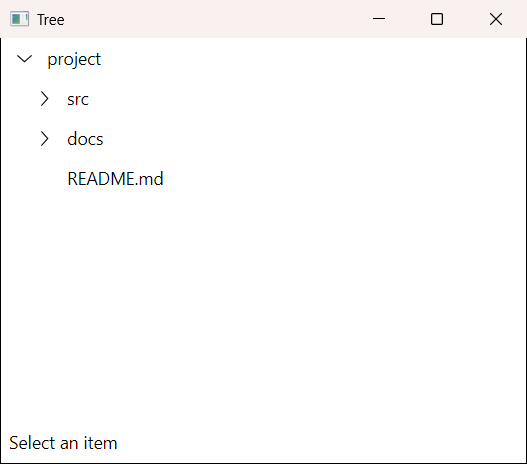
Treeview
A tree view: folders and files; selecting an item shows its path
cd samples/UsingDotNet/tests/packages/AvaloniaSamples then ring 18_treeview.ringSource code
# A tree view: folders and files; selecting an item shows its path
load "avalonia.ring"
avUse()
oWindow = avWindow("Tree",420,340)
oDock = new DockPanel()
oWindow.Content = oDock
oPath = avText("Select an item")
oPath.Margin = avThickness(6)
oDock.SetDock(oPath,"Bottom")
oTree = new TreeView()
oTree.setSelectionChangedEvent("selected()")
oProject = node("project",["src","docs","README.md"])
oSource = oProject.Items.toList()[1]
for cFile in ["main.ring","helpers.ring","tests.ring"]
oSource.Items.Add(node(cFile,[]))
next
oDocs = oProject.Items.toList()[2]
oDocs.Items.Add(node("guide.md",[]))
oDocs.Items.Add(node("api.md",[]))
oTree.Items.Add(oProject)
oProject.IsExpanded = True
oDock {
Children.Add(oPath)
Children.Add(oTree)
}
aParents = []
avRun(oWindow)
# --------------------------------------------------------------------------
# an item with a header and children (the names of items)
func node cHeader, aChildren
oItem = new TreeViewItem()
oItem.Header = cHeader
for cChild in aChildren
oItem.Items.Add(node(cChild,[]))
next
return oItem
func selected
oItem = oTree.SelectedItem
if isobject(oItem) and not oItem.isNull()
oPath.Text = "Selected: " + oItem.Header
ok
# the number of items of a tree (an item and everything below it)
func countItems oItem
nCount = 1
for oChild in oItem.Items.toList()
nCount += countItems(oChild)
next
return nCount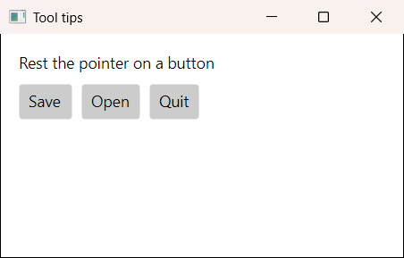
Tooltips
Tool tips: a text that appears when the pointer rests on a control
cd samples/UsingDotNet/tests/packages/AvaloniaSamples then ring 19_tooltips.ringSource code
# Tool tips: a text that appears when the pointer rests on a control
load "avalonia.ring"
avUse()
oWindow = avWindow("Tool tips",360,200)
oPanel = avStack(10,16)
oWindow.Content = oPanel
oSave = avButton("Save","")
oOpen = avButton("Open","")
oQuit = avButton("Quit","")
oTip = new ToolTip()
oTip.SetTip(oSave,"Save the document (Ctrl+S)")
oTip.SetTip(oOpen,"Open a document (Ctrl+O)")
oTip.SetTip(oQuit,"Close the program")
oTip.SetShowDelay(oSave,200)
oRow = avRow(8)
oRow {
Children.Add(oSave)
Children.Add(oOpen)
Children.Add(oQuit)
}
oPanel {
Children.Add(avText("Rest the pointer on a button"))
Children.Add(oRow)
}
avRun(oWindow)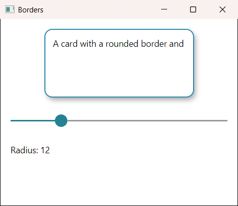
Borders shadows
Borders: thickness, corner radius, background and a shadow (BoxShadow); a slider changes the radius
cd samples/UsingDotNet/tests/packages/AvaloniaSamples then ring 21_borders_shadows.ringSource code
# Borders: thickness, corner radius, background and a shadow (BoxShadow); a slider changes the radius
load "avalonia.ring"
avUse()
oWindow = avWindow("Borders",380,300)
oPanel = avStack(12,16)
oWindow.Content = oPanel
oCard = new Border()
oCard {
Width = 240
Height = 110
Background = avBrush("White")
BorderBrush = avBrush("#2E86AB")
BorderThickness = avThickness(2)
CornerRadius = (new CornerRadius).Parse("12")
BoxShadow = (new BoxShadows).Parse("4 6 12 0 #55000000")
Padding = avThickness(12)
}
oCard.Child = avText("A card with a rounded border and a shadow")
oRadius = new Slider()
oRadius {
Minimum = 0
Maximum = 55
Value = 12
setValueChangedEvent("radiusChanged()")
}
oInfo = avText("Radius: 12")
oPanel {
Children.Add(oCard)
Children.Add(oRadius)
Children.Add(oInfo)
}
avRun(oWindow)
# --------------------------------------------------------------------------
func radiusChanged
nRadius = floor(oRadius.Value)
oCard.CornerRadius = (new CornerRadius).Parse("" + nRadius)
oInfo.Text = "Radius: " + nRadius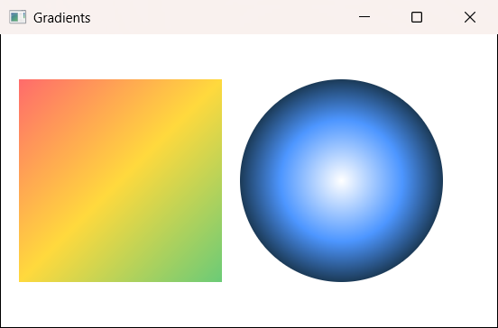
Gradients
Gradients: a linear gradient and a radial gradient; the stops are a list that the program changes
cd samples/UsingDotNet/tests/packages/AvaloniaSamples then ring 22_gradients.ringSource code
# Gradients: a linear gradient and a radial gradient; the stops are a list that the program changes
load "avalonia.ring"
avUse()
oWindow = avWindow("Gradients",440,260)
oPanel = avRow(16)
oPanel.Margin = avThickness(16)
oWindow.Content = oPanel
oLinear = new LinearGradientBrush()
oLinear.StartPoint = (new RelativePoint).Parse("0%,0%")
oLinear.EndPoint = (new RelativePoint).Parse("100%,100%")
addStop(oLinear,"#FF6B6B",0)
addStop(oLinear,"#FFD93D",0.5)
addStop(oLinear,"#6BCB77",1)
oFirst = new Rectangle()
oFirst {
Width = 180
Height = 180
Fill = oLinear
}
oRadial = new RadialGradientBrush()
addStop(oRadial,"White",0)
addStop(oRadial,"#4D96FF",0.6)
addStop(oRadial,"#1B3A57",1)
oSecond = new Ellipse()
oSecond {
Width = 180
Height = 180
Fill = oRadial
}
oPanel {
Children.Add(oFirst)
Children.Add(oSecond)
}
avRun(oWindow)
# --------------------------------------------------------------------------
# a stop of a gradient: a color at an offset from 0 to 1
func addStop oBrush, cColor, nOffset
oStop = (new GradientStop).@New([ :color = (new Color).Parse(cColor), :offset = nOffset ])
oBrush.GradientStops.Add(oStop)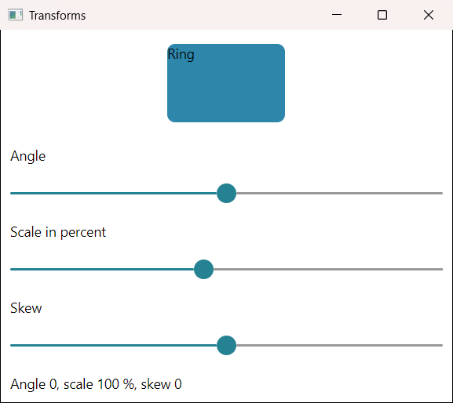
Transforms
Transforms: a rectangle is rotated, scaled and skewed with sliders (RenderTransform and a TransformGroup)
cd samples/UsingDotNet/tests/packages/AvaloniaSamples then ring 23_transforms.ringSource code
# Transforms: a rectangle is rotated, scaled and skewed with sliders (RenderTransform and a TransformGroup)
load "avalonia.ring"
avUse()
oWindow = avWindow("Transforms",460,380)
oDock = new DockPanel()
oWindow.Content = oDock
oControls = avStack(4,10)
oDock.SetDock(oControls,"Bottom")
oRotate = new RotateTransform()
oScale = new ScaleTransform()
oSkew = new SkewTransform()
oGroup = new TransformGroup()
oGroup.Children.Add(oScale)
oGroup.Children.Add(oSkew)
oGroup.Children.Add(oRotate)
oAngle = slider("Angle",-180,180,0)
oSize = slider("Scale in percent",20,200,100)
oSlant = slider("Skew",-45,45,0)
oInfo = avText("")
oControls.Children.Add(oInfo)
oBox = new Border()
oBox {
Width = 120
Height = 80
Background = avBrush("#2E86AB")
CornerRadius = (new CornerRadius).Parse("8")
HorizontalAlignment = "Center"
VerticalAlignment = "Center"
RenderTransformOrigin = (new RelativePoint).Parse("50%,50%")
RenderTransform = oGroup
}
oBox.Child = avText("Ring")
oDock {
Children.Add(oControls)
Children.Add(oBox)
}
changed()
avRun(oWindow)
# --------------------------------------------------------------------------
# a labeled slider in the panel of the controls
func slider cName, nMinimum, nMaximum, nValue
oSlider = new Slider()
oSlider {
Minimum = nMinimum
Maximum = nMaximum
Value = nValue
setValueChangedEvent("changed()")
}
oControls.Children.Add(avText(cName))
oControls.Children.Add(oSlider)
return oSlider
func changed
oRotate.Angle = oAngle.Value
oScale.ScaleX = oSize.Value / 100
oScale.ScaleY = oSize.Value / 100
oSkew.AngleX = oSlant.Value
oInfo.Text = "Angle " + floor(oAngle.Value) + ", scale " + floor(oSize.Value) + " %, skew " + floor(oSlant.Value)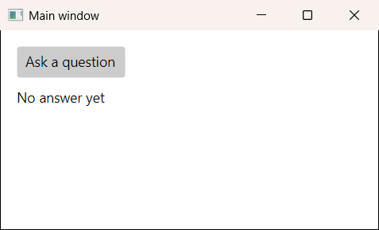
Dialogs
A second window: a dialog that is shown on top of the main window; it gives its answer back when it closes
cd samples/UsingDotNet/tests/packages/AvaloniaSamples then ring 24_dialogs.ringSource code
# A second window: a dialog that is shown on top of the main window; it gives its answer back when it closes
load "avalonia.ring"
avUse()
oWindow = avWindow("Main window",380,200)
oPanel = avStack(10,16)
oWindow.Content = oPanel
oAnswer = avText("No answer yet")
oPanel {
Children.Add(avButton("Ask a question","ask()"))
Children.Add(oAnswer)
}
oDialog = ""
cAnswer = ""
avRun(oWindow)
# --------------------------------------------------------------------------
# the dialog: a question and two buttons; it closes when one is pressed
func makeDialog cQuestion
oBox = avWindow("Question",300,140)
oBox.WindowStartupLocation = "CenterOwner"
oContent = avStack(12,16)
oContent.Children.Add(avText(cQuestion))
oButtons = avRow(8)
oButtons {
Children.Add(avButton("Yes","answer('Yes')"))
Children.Add(avButton("No","answer('No')"))
}
oContent.Children.Add(oButtons)
oBox.Content = oContent
return oBox
func ask
oDialog = makeDialog("Do you like Avalonia?")
oDialog.Show(oWindow)
func answer cText
cAnswer = cText
oAnswer.Text = "You said: " + cText
oDialog.Close([])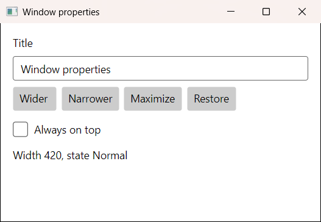
Window state
The window: its title, size, state and position are properties that the program reads and changes
cd samples/UsingDotNet/tests/packages/AvaloniaSamples then ring 25_window_state.ringSource code
# The window: its title, size, state and position are properties that the program reads and changes
load "avalonia.ring"
avUse()
oWindow = avWindow("Window properties",420,260)
oPanel = avStack(8,16)
oWindow.Content = oPanel
oTitle = new TextBox()
oTitle.Text = "Window properties"
oTitle.setTextChangedEvent("retitle()")
oInfo = avText("")
oRow = avRow(6)
oRow {
Children.Add(avButton("Wider","wider()"))
Children.Add(avButton("Narrower","narrower()"))
Children.Add(avButton("Maximize","maximize()"))
Children.Add(avButton("Restore","restore()"))
}
oTopmost = new CheckBox()
oTopmost.Content = "Always on top"
oTopmost.setIsCheckedChangedEvent("topmost()")
oPanel {
Children.Add(avText("Title"))
Children.Add(oTitle)
Children.Add(oRow)
Children.Add(oTopmost)
Children.Add(oInfo)
}
showInfo()
avRun(oWindow)
# --------------------------------------------------------------------------
func showInfo
oInfo.Text = "Width " + floor(oWindow.Width) + ", state " + oWindow.WindowState
func retitle
cText = oTitle.Text
if isstring(cText)
oWindow.Title = cText
ok
func wider
oWindow.Width = oWindow.Width + 40
showInfo()
func narrower
oWindow.Width = oWindow.Width - 40
showInfo()
func maximize
oWindow.WindowState = "Maximized"
showInfo()
func restore
oWindow.WindowState = "Normal"
showInfo()
func topmost
oWindow.Topmost = oTopmost.IsChecked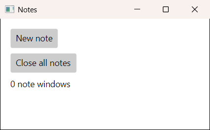
Multi window
Several windows: the main window opens note windows; each one keeps its own text; closing the main window ends the program
cd samples/UsingDotNet/tests/packages/AvaloniaSamples then ring 26_multi_window.ringSource code
# Several windows: the main window opens note windows; each one keeps its own text; closing the main window ends the program
load "avalonia.ring"
avUse()
oWindow = avWindow("Notes",340,180)
oPanel = avStack(8,16)
oWindow.Content = oPanel
oCount = avText("0 note windows")
oPanel {
Children.Add(avButton("New note","newNote()"))
Children.Add(avButton("Close all notes","closeNotes()"))
Children.Add(oCount)
}
aNotes = [] # the note windows
avRun(oWindow)
# --------------------------------------------------------------------------
func newNote
oNote = avWindow("Note " + (len(aNotes) + 1),260,180)
oNote.Content = new TextBox()
oNote.Content.AcceptsReturn = True
oNote.Content.Text = "Note " + (len(aNotes) + 1)
oNote.Show([])
aNotes + oNote
showCount()
func closeNotes
for oNote in aNotes
oNote.Close([])
next
aNotes = []
showCount()
func showCount
oCount.Text = "" + len(aNotes) + " note windows"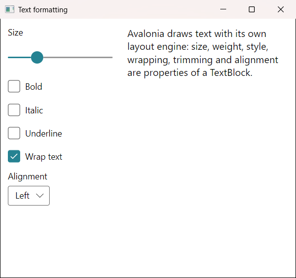
Text formatting
Text formatting: size, weight, style, wrapping, trimming and alignment of a TextBlock
cd samples/UsingDotNet/tests/packages/AvaloniaSamples then ring 27_text_formatting.ringSource code
# Text formatting: size, weight, style, wrapping, trimming and alignment of a TextBlock
load "avalonia.ring"
avUse()
oWindow = avWindow("Text formatting",480,420)
oDock = new DockPanel()
oWindow.Content = oDock
oControls = avStack(6,12)
oDock.SetDock(oControls,"Left")
oControls.Width = 170
oText = "" # the text block that the controls format (made below)
oSize = new Slider()
oSize {
Minimum = 8
Maximum = 40
Value = 16
setValueChangedEvent("format()")
}
oBold = check("Bold")
oItalic = check("Italic")
oWrap = check("Wrap text")
oWrap.IsChecked = True
oUnderline = check("Underline")
oAlign = new ComboBox()
for cAlign in ["Left","Center","Right","Justify"]
oAlign.Items.Add(cAlign)
next
oAlign.SelectedIndex = 0
oAlign.setSelectionChangedEvent("format()")
oControls {
Children.Add(avText("Size"))
Children.Add(oSize)
Children.Add(oBold)
Children.Add(oItalic)
Children.Add(oUnderline)
Children.Add(oWrap)
Children.Add(avText("Alignment"))
Children.Add(oAlign)
}
oText = new TextBlock()
oText {
Text = "Avalonia draws text with its own layout engine: size, weight, style, wrapping, trimming and alignment are properties of a TextBlock."
Margin = avThickness(12)
}
oDock {
Children.Add(oControls)
Children.Add(oText)
}
format()
avRun(oWindow)
# --------------------------------------------------------------------------
func check cText
oBox = new CheckBox()
oBox {
Content = cText
setIsCheckedChangedEvent("format()")
}
return oBox
func format
if not isobject(oText) or not isobject(oAlign)
return
ok
oText.FontSize = oSize.Value
if oBold.IsChecked
oText.FontWeight = "Bold"
else
oText.FontWeight = "Normal"
ok
if oItalic.IsChecked
oText.FontStyle = "Italic"
else
oText.FontStyle = "Normal"
ok
if oWrap.IsChecked
oText.TextWrapping = "Wrap"
else
oText.TextWrapping = "NoWrap"
ok
if oAlign.SelectedIndex >= 0
oText.TextAlignment = oAlign.SelectedItem
ok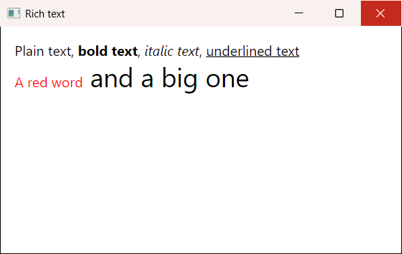
Rich text
Rich text: one TextBlock with runs of different formats (Inlines: Run, Bold, Italic, Underline, LineBreak)
cd samples/UsingDotNet/tests/packages/AvaloniaSamples then ring 28_rich_text.ringSource code
# Rich text: one TextBlock with runs of different formats (Inlines: Run, Bold, Italic, Underline, LineBreak)
load "avalonia.ring"
avUse()
oWindow = avWindow("Rich text",460,260)
oText = new TextBlock()
oText {
Margin = avThickness(16)
TextWrapping = "Wrap"
FontSize = 16
}
oWindow.Content = oText
add(oText,"Plain text, ","")
add(oText,"bold text","Bold")
add(oText,", ","")
add(oText,"italic text","Italic")
add(oText,", ","")
add(oText,"underlined text","Underline")
oText.Inlines.Add(new DocumentsLineBreak())
add(oText,"A red word","Red")
add(oText," and a big one","Big")
avRun(oWindow)
# --------------------------------------------------------------------------
# a run of text with a format
func add oBlock, cText, cFormat
oRun = new Run()
oRun.Text = cText
switch cFormat
on "Bold"
oRun.FontWeight = "Bold"
on "Italic"
oRun.FontStyle = "Italic"
on "Underline"
oRun.TextDecorations = (new TextDecorations).getUnderline()
on "Red"
oRun.Foreground = avBrush("Red")
on "Big"
oRun.FontSize = 30
off
oBlock.Inlines.Add(oRun)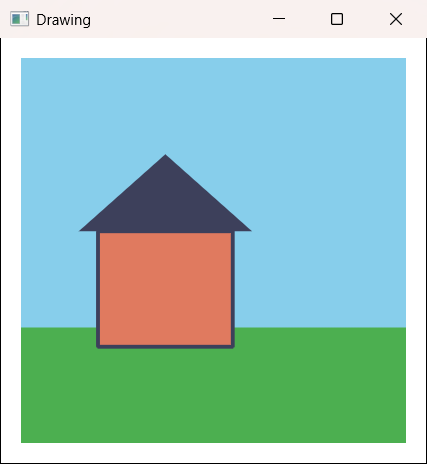
Drawing image
A picture made of drawings (DrawingImage): geometries with brushes and pens, shown by an Image control
cd samples/UsingDotNet/tests/packages/AvaloniaSamples then ring 29_drawing_image.ringSource code
# A picture made of drawings (DrawingImage): geometries with brushes and pens, shown by an Image control
load "avalonia.ring"
avUse()
oWindow = avWindow("Drawing",340,340)
oGroup = new DrawingGroup()
oSky = drawing("RectangleGeometry","0,0,200,200","#87CEEB","")
oSun = new GeometryDrawing()
oSun.Brush = avBrush("#FFD93D")
oSun.Geometry = (new EllipseGeometry).@New([ :rect = (new Rect).Parse("130,20,40,40") ])
oGrass = drawing("RectangleGeometry","0,140,200,60","#4CAF50","")
oHouse = drawing("RectangleGeometry","40,90,70,60","#E07A5F","#3D405B")
oRoof = new GeometryDrawing()
oRoof.Brush = avBrush("#3D405B")
oRoof.Geometry = (new Geometry).Parse("M 30,90 L 75,50 L 120,90 Z")
oGroup {
Children.Add(oSky)
Children.Add(oSun)
Children.Add(oGrass)
Children.Add(oHouse)
Children.Add(oRoof)
}
oPicture = new DrawingImage()
oPicture.Drawing = oGroup
oImage = new Image()
oImage {
Source = oPicture
Stretch = "Uniform"
Margin = avThickness(16)
}
oWindow.Content = oImage
avRun(oWindow)
# --------------------------------------------------------------------------
# a rectangle drawing: the rectangle as text "x,y,width,height", the fill and the color of the line ("" for no line)
func drawing cKind, cRect, cFill, cLine
oDrawing = new GeometryDrawing()
oDrawing.Brush = avBrush(cFill)
oRectangle = (new RectangleGeometry).@New([ :rect = (new Rect).Parse(cRect) ])
oDrawing.Geometry = oRectangle
if cLine != ""
oPen = new Pen()
oPen.Brush = avBrush(cLine)
oPen.Thickness = 2
oDrawing.Pen = oPen
ok
return oDrawing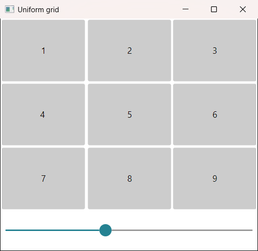
Uniform grid
A uniform grid: cells of the same size; a button grid whose size changes with a slider
cd samples/UsingDotNet/tests/packages/AvaloniaSamples then ring 30_uniform_grid.ringSource code
# A uniform grid: cells of the same size; a button grid whose size changes with a slider
load "avalonia.ring"
avUse()
oWindow = avWindow("Uniform grid",420,380)
oDock = new DockPanel()
oWindow.Content = oDock
oSlider = new Slider()
oSlider {
Minimum = 1
Maximum = 6
Value = 3
TickFrequency = 1
IsSnapToTickEnabled = True
Margin = avThickness(8)
setValueChangedEvent("resize()")
}
oDock.SetDock(oSlider,"Bottom")
oGrid = new UniformGrid()
oDock {
Children.Add(oSlider)
Children.Add(oGrid)
}
resize()
avRun(oWindow)
# --------------------------------------------------------------------------
# the grid has n columns and n rows of buttons
func resize
nSize = floor(oSlider.Value)
oGrid.Columns = nSize
oGrid.Rows = nSize
oGrid.Children.Clear()
for nCell = 1 to nSize * nSize
oButton = avButton("" + nCell,"")
oButton.HorizontalAlignment = "Stretch"
oButton.VerticalAlignment = "Stretch"
oButton.HorizontalContentAlignment = "Center"
oButton.VerticalContentAlignment = "Center"
oButton.Margin = avThickness(2)
oGrid.Children.Add(oButton)
next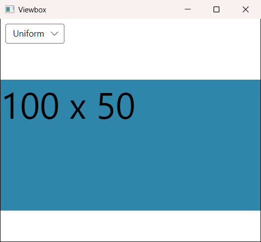
Viewbox
A viewbox: its content is scaled to the space that it has; the Stretch property tells how
cd samples/UsingDotNet/tests/packages/AvaloniaSamples then ring 31_viewbox.ringSource code
# A viewbox: its content is scaled to the space that it has; the Stretch property tells how
load "avalonia.ring"
avUse()
oWindow = avWindow("Viewbox",420,360)
oDock = new DockPanel()
oWindow.Content = oDock
oChoice = new ComboBox()
for cStretch in ["Uniform","UniformToFill","Fill","None"]
oChoice.Items.Add(cStretch)
next
oChoice.SelectedIndex = 0
oChoice.Margin = avThickness(8)
oChoice.setSelectionChangedEvent("stretch()")
oDock.SetDock(oChoice,"Top")
oBox = new Viewbox()
oContent = new Border()
oContent {
Width = 100
Height = 50
Background = avBrush("#2E86AB")
}
oContent.Child = avText("100 x 50")
oBox.Child = oContent
oDock {
Children.Add(oChoice)
Children.Add(oBox)
}
avRun(oWindow)
# --------------------------------------------------------------------------
func stretch
if oChoice.SelectedIndex >= 0
oBox.Stretch = oChoice.SelectedItem
ok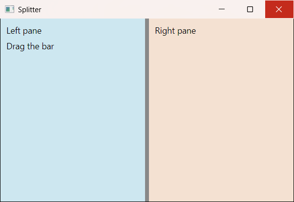
Grid splitter
A grid splitter: the bar between two columns; dragging it changes their widths (here a slider does the same)
cd samples/UsingDotNet/tests/packages/AvaloniaSamples then ring 32_grid_splitter.ringSource code
# A grid splitter: the bar between two columns; dragging it changes their widths (here a slider does the same)
load "avalonia.ring"
avUse()
oWindow = avWindow("Splitter",480,300)
oGrid = new Grid()
oGrid.ColumnDefinitions = (new ColumnDefinitions).Parse("*,6,*")
oWindow.Content = oGrid
oLeft = pane("Left pane","#CDE7F0")
oRight = pane("Right pane","#F4E1D2")
oBar = new GridSplitter()
oBar {
Background = avBrush("#888888")
ResizeDirection = "Columns"
}
oGrid.SetColumn(oLeft,0)
oGrid.SetColumn(oBar,1)
oGrid.SetColumn(oRight,2)
oGrid {
Children.Add(oLeft)
Children.Add(oBar)
Children.Add(oRight)
}
oInfo = avText("")
oLeft.Child.Children.Add(oInfo)
oInfo.Text = "Drag the bar"
avRun(oWindow)
# --------------------------------------------------------------------------
# a colored pane with a stack panel and a title
func pane cTitle, cColor
oBorder = new Border()
oBorder.Background = avBrush(cColor)
oContent = avStack(6,10)
oContent.Children.Add(avText(cTitle))
oBorder.Child = oContent
return oBorder
# the left column gets a share of the width (the columns are 1: the left pane, 2: the bar, 3: the right pane)
func share nPercent
oColumns = oGrid.ColumnDefinitions.toList()
oColumns[1].Width = (new GridLength).@New([ :value = nPercent, :type = "Star" ])
oColumns[3].Width = (new GridLength).@New([ :value = 100 - nPercent, :type = "Star" ])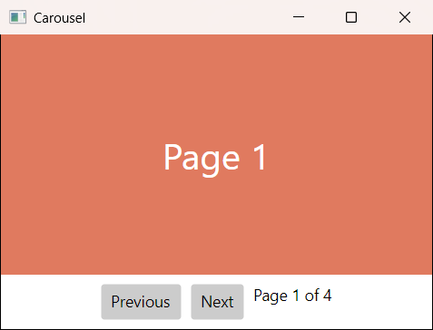
Carousel
A carousel: one page at a time; the buttons go to the next and the previous page
cd samples/UsingDotNet/tests/packages/AvaloniaSamples then ring 33_carousel.ringSource code
# A carousel: one page at a time; the buttons go to the next and the previous page
load "avalonia.ring"
avUse()
oWindow = avWindow("Carousel",380,260)
oDock = new DockPanel()
oWindow.Content = oDock
oBar = avRow(8)
oBar.Margin = avThickness(8)
oBar.HorizontalAlignment = "Center"
oBar {
Children.Add(avButton("Previous","previousPage()"))
Children.Add(avButton("Next","nextPage()"))
}
oDock.SetDock(oBar,"Bottom")
oPages = new Carousel()
aColors = ["#E07A5F","#81B29A","#3D405B","#F2CC8F"]
nPage = 0
for cColor in aColors
nPage++
oPage = new Border()
oPage.Background = avBrush(cColor)
oLabel = avText("Page " + nPage)
oLabel.FontSize = 32
oLabel.Foreground = avBrush("White")
oLabel.HorizontalAlignment = "Center"
oLabel.VerticalAlignment = "Center"
oPage.Child = oLabel
oPages.Items.Add(oPage)
next
oPages.SelectedIndex = 0
oInfo = avText("Page 1 of 4")
oInfo.HorizontalAlignment = "Center"
oDock {
Children.Add(oBar)
Children.Add(oPages)
}
oBar.Children.Add(oInfo)
avRun(oWindow)
# --------------------------------------------------------------------------
func nextPage
oPages.@Next()
showPage()
func previousPage
oPages.Previous()
showPage()
func showPage
oInfo.Text = "Page " + (oPages.SelectedIndex + 1) + " of " + oPages.Items.Count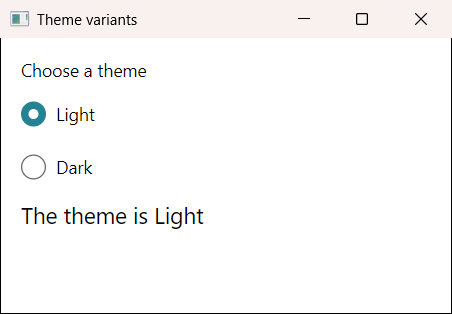
Theme variants
Themes: the application switches between the light and the dark variant of the Fluent theme; the window follows
cd samples/UsingDotNet/tests/packages/AvaloniaSamples then ring 34_theme_variants.ringSource code
# Themes: the application switches between the light and the dark variant of the Fluent theme; the window follows
load "avalonia.ring"
avUse()
oWindow = avWindow("Theme variants",360,220)
oPanel = avStack(10,16)
oWindow.Content = oPanel
oText = avText("")
oText.FontSize = 18
oLight = new RadioButton()
oLight.Content = "Light"
oLight.GroupName = "theme"
oLight.setIsCheckedChangedEvent("themeChanged()")
oDark = new RadioButton()
oDark.Content = "Dark"
oDark.GroupName = "theme"
oDark.setIsCheckedChangedEvent("themeChanged()")
oPanel {
Children.Add(avText("Choose a theme"))
Children.Add(oLight)
Children.Add(oDark)
Children.Add(oText)
}
oLight.IsChecked = True
avRun(oWindow)
# --------------------------------------------------------------------------
# the theme variants are static values of the class ThemeVariant
func variant cName
return dnType("Avalonia.Styling.ThemeVariant, Avalonia.Base").getProp(cName)
func themeChanged
if oDark.IsChecked
oAvApp.RequestedThemeVariant = variant("Dark")
else
oAvApp.RequestedThemeVariant = variant("Light")
ok
oText.Text = "The theme is " + oAvApp.ActualThemeVariant.ToString()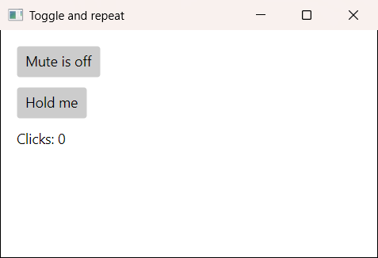
Toggle repeat
A toggle button and a repeat button: the toggle keeps its state, the repeat button clicks again and again while it is held down
cd samples/UsingDotNet/tests/packages/AvaloniaSamples then ring 35_toggle_repeat.ringSource code
# A toggle button and a repeat button: the toggle keeps its state, the repeat button clicks again and again while it is held down
load "avalonia.ring"
avUse()
oWindow = avWindow("Toggle and repeat",380,230)
oPanel = avStack(10,16)
oWindow.Content = oPanel
nCount = 0
oToggle = new ToggleButton()
oToggle {
Content = "Mute is off"
setIsCheckedChangedEvent("toggled()")
}
oRepeat = new RepeatButton()
oRepeat {
Content = "Hold me"
Delay = 300
Interval = 80
setClickEvent("counted()")
}
oCount = avText("Clicks: 0")
oPanel {
Children.Add(oToggle)
Children.Add(oRepeat)
Children.Add(oCount)
}
avRun(oWindow)
# --------------------------------------------------------------------------
func toggled
if oToggle.IsChecked
oToggle.Content = "Mute is on"
else
oToggle.Content = "Mute is off"
ok
func counted
nCount++
oCount.Text = "Clicks: " + nCount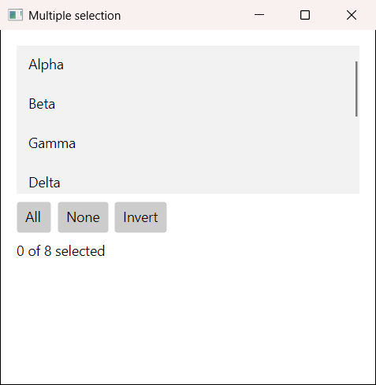
Listbox multi
A list box with several selected items: select all, none, invert; the selected items are counted
cd samples/UsingDotNet/tests/packages/AvaloniaSamples then ring 36_listbox_multi.ringSource code
# A list box with several selected items: select all, none, invert; the selected items are counted
load "avalonia.ring"
avUse()
oWindow = avWindow("Multiple selection",380,360)
oPanel = avStack(8,16)
oWindow.Content = oPanel
oList = new ListBox()
oList.SelectionMode = "Multiple"
oList.Height = 150
oList.setSelectionChangedEvent("changed()")
aNames = ["Alpha","Beta","Gamma","Delta","Epsilon","Zeta","Eta","Theta"]
for cName in aNames
oList.Items.Add(cName)
next
oInfo = avText("")
oRow = avRow(6)
oRow {
Children.Add(avButton("All","oList.SelectAll()"))
Children.Add(avButton("None","oList.UnselectAll()"))
Children.Add(avButton("Invert","invert()"))
}
oPanel {
Children.Add(oList)
Children.Add(oRow)
Children.Add(oInfo)
}
changed()
avRun(oWindow)
# --------------------------------------------------------------------------
func changed
oInfo.Text = "" + oList.SelectedItems.Count + " of " + oList.Items.Count + " selected"
# the selected items become not selected and the others selected
func invert
aWas = []
for cName in aNames
aWas + oList.SelectedItems.Contains(cName)
next
oList.UnselectAll()
nName = 0
for cName in aNames
nName++
if not aWas[nName]
oList.SelectedItems.Add(cName)
ok
next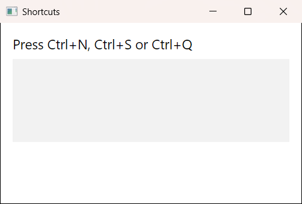
Keyboard shortcuts
Keyboard shortcuts: Ctrl+N, Ctrl+S and Ctrl+Q with the KeyDown event of the window (the key and its modifiers)
cd samples/UsingDotNet/tests/packages/AvaloniaSamples then ring 37_keyboard_shortcuts.ringSource code
# Keyboard shortcuts: Ctrl+N, Ctrl+S and Ctrl+Q with the KeyDown event of the window (the key and its modifiers)
load "avalonia.ring"
avUse()
oWindow = avWindow("Shortcuts",400,240)
oPanel = avStack(8,16)
oWindow.Content = oPanel
oLast = avText("Press Ctrl+N, Ctrl+S or Ctrl+Q")
oLast.FontSize = 18
oLog = new ListBox()
oLog.Height = 110
oPanel {
Children.Add(oLast)
Children.Add(oLog)
}
oWindow.setKeyDownEvent("shortcut(aDotNetArgs[2].Key,aDotNetArgs[2].KeyModifiers)")
avRun(oWindow)
# --------------------------------------------------------------------------
# the name of a command for a key and its modifiers ("" when it is not a shortcut)
func commandOf cKey, cModifiers
cKey = "" + cKey
cModifiers = "" + cModifiers
if substr(cModifiers,"Control") = 0
return ""
ok
switch cKey
on "N"
return "New"
on "S"
return "Save"
on "Q"
return "Quit"
off
return ""
func shortcut cKey, cModifiers
cCommand = commandOf(cKey,cModifiers)
if cCommand != ""
oLast.Text = cCommand + " (Ctrl+" + cKey + ")"
oLog.Items.Add(cCommand)
ok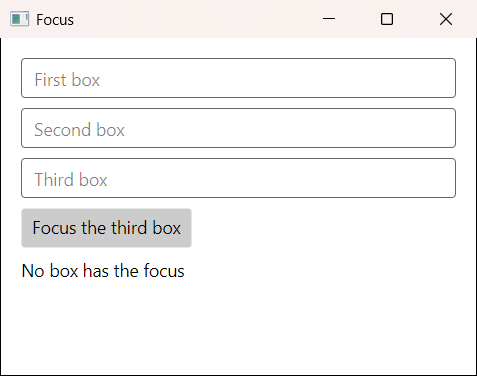
Focus
Focus: the text boxes tell when they get and lose the focus; a button moves the focus to a box
cd samples/UsingDotNet/tests/packages/AvaloniaSamples then ring 38_focus.ringSource code
# Focus: the text boxes tell when they get and lose the focus; a button moves the focus to a box
load "avalonia.ring"
avUse()
oWindow = avWindow("Focus",380,270)
oPanel = avStack(8,16)
oWindow.Content = oPanel
oFirst = box("First box")
oSecond = box("Second box")
oThird = box("Third box")
oInfo = avText("No box has the focus")
oPanel {
Children.Add(oFirst)
Children.Add(oSecond)
Children.Add(oThird)
Children.Add(avButton("Focus the third box","oThird.Focus([])"))
Children.Add(oInfo)
}
nGot = 0
nLost = 0
avRun(oWindow)
# --------------------------------------------------------------------------
func box cName
oBox = new TextBox()
oBox {
Watermark = cName
setGotFocusEvent("got()")
setLostFocusEvent("lost()")
}
return oBox
func which
for oBox in [oFirst,oSecond,oThird]
if oBox.IsFocused
return oBox.Watermark
ok
next
return "none"
func got
nGot++
oInfo.Text = "Focus: " + which()
func lost
nLost++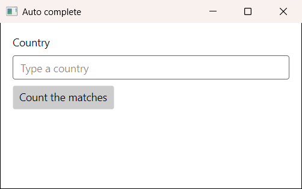
Autocomplete
An auto complete box: the text is completed from a list of items that a .NET list holds
cd samples/UsingDotNet/tests/packages/AvaloniaSamples then ring 39_autocomplete.ringSource code
# An auto complete box: the text is completed from a list of items that a .NET list holds
load "avalonia.ring"
avUse()
oWindow = avWindow("Auto complete",400,220)
oPanel = avStack(8,16)
oWindow.Content = oPanel
aCountryNames = ["Argentina","Australia","Austria","Belgium","Brazil","Canada","Chile","China","Egypt","Estonia","France","Germany","Greece","India","Italy","Japan"]
oCountries = dnNewGeneric("System.Collections.Generic.List",["System.String"],[])
for cName in aCountryNames
oCountries.callMethod("Add",[cName])
next
oBox = new AutoCompleteBox()
oBox {
ItemsSource = oCountries
MinimumPrefixLength = 1
Watermark = "Type a country"
}
oInfo = avText("")
oPanel {
Children.Add(avText("Country"))
Children.Add(oBox)
Children.Add(avButton("Count the matches","typed()"))
Children.Add(oInfo)
}
avRun(oWindow)
# --------------------------------------------------------------------------
func typed
cText = oBox.Text
if isstring(cText) and cText != ""
nMatches = 0
for cName in aCountryNames
if left(lower(cName),len(cText)) = lower(cText)
nMatches++
ok
next
oInfo.Text = "" + nMatches + " countries start with " + cText
else
oInfo.Text = ""
ok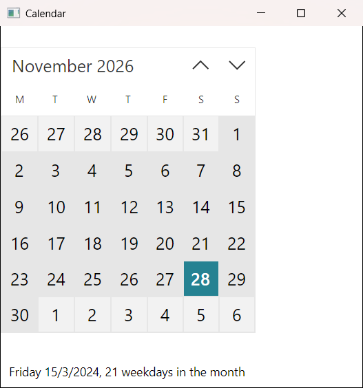
Calendar control
A calendar control: the selected date and the month that is shown; the program counts the weekdays of the month
cd samples/UsingDotNet/tests/packages/AvaloniaSamples then ring 40_calendar_control.ringSource code
# A calendar control: the selected date and the month that is shown; the program counts the weekdays of the month
load "avalonia.ring"
avUse()
oWindow = avWindow("Calendar",420,420)
oDock = new DockPanel()
oWindow.Content = oDock
oInfo = avText("")
oInfo.Margin = avThickness(10)
oDock.SetDock(oInfo,"Bottom")
oCalendar = new ControlsCalendar()
oCalendar.setSelectedDatesChangedEvent("changed()")
oDock {
Children.Add(oInfo)
Children.Add(oCalendar)
}
oCalendar.SelectedDate = dnNew("System.DateTime",[2024,3,15])
avRun(oWindow)
# --------------------------------------------------------------------------
# the number of days of a month that are not Saturday or Sunday
func weekdaysOf nYear, nMonth
nDays = dnStatic("System.DateTime","DaysInMonth",[nYear,nMonth])
nWeekdays = 0
for nDay = 1 to nDays
cName = "" + dnNew("System.DateTime",[nYear,nMonth,nDay]).DayOfWeek
if cName != "Saturday" and cName != "Sunday"
nWeekdays++
ok
next
return nWeekdays
func changed
oDate = oCalendar.SelectedDate
if oDate.isNull()
oInfo.Text = "Select a day"
else
oInfo.Text = "" + oDate.DayOfWeek + " " + oDate.Day + "/" + oDate.Month + "/" + oDate.Year + ", " + weekdaysOf(oDate.Year,oDate.Month) + " weekdays in the month"
ok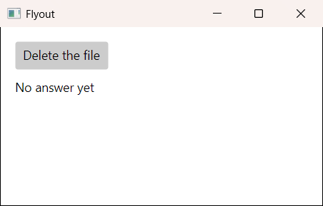
Flyout
A flyout: a small panel that opens next to a button with a question and two answers
cd samples/UsingDotNet/tests/packages/AvaloniaSamples then ring 41_flyout.ringSource code
# A flyout: a small panel that opens next to a button with a question and two answers
load "avalonia.ring"
avUse()
oWindow = avWindow("Flyout",360,200)
oPanel = avStack(10,16)
oWindow.Content = oPanel
oAnswer = avText("No answer yet")
oMenuButton = avButton("Delete the file","")
oFlyout = new Flyout()
oContent = avStack(8,10)
oContent {
Children.Add(avText("Delete this file for ever?"))
}
oChoices = avRow(8)
oChoices {
Children.Add(avButton("Delete","answer('Deleted')"))
Children.Add(avButton("Keep","answer('Kept')"))
}
oContent.Children.Add(oChoices)
oFlyout.Content = oContent
oMenuButton.Flyout = oFlyout
oPanel {
Children.Add(oMenuButton)
Children.Add(oAnswer)
}
avRun(oWindow)
# --------------------------------------------------------------------------
func answer cText
oAnswer.Text = "The file was " + lower(cText)
oFlyout.Hide()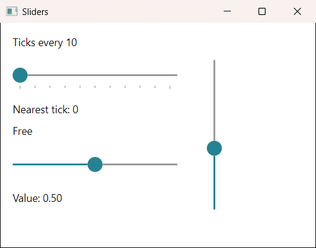
Slider ticks
Sliders: ticks every 10 and a value that is shown rounded to the nearest tick, a free slider and a vertical slider
cd samples/UsingDotNet/tests/packages/AvaloniaSamples then ring 42_slider_ticks.ringSource code
# Sliders: ticks every 10 and a value that is shown rounded to the nearest tick, a free slider and a vertical slider
load "avalonia.ring"
avUse()
oWindow = avWindow("Sliders",420,300)
oPanel = avRow(24)
oPanel.Margin = avThickness(16)
oWindow.Content = oPanel
oLeft = avStack(10,0)
oSnap = new Slider()
oSnap {
Minimum = 0
Maximum = 100
TickFrequency = 10
TickPlacement = "BottomRight"
Width = 220
setValueChangedEvent("snapped()")
}
oSnapText = avText("")
oFree = new Slider()
oFree {
Minimum = 0
Maximum = 1
Value = 0.5
Width = 220
setValueChangedEvent("freed()")
}
oFreeText = avText("")
oLeft {
Children.Add(avText("Ticks every 10"))
Children.Add(oSnap)
Children.Add(oSnapText)
Children.Add(avText("Free"))
Children.Add(oFree)
Children.Add(oFreeText)
}
oVertical = new Slider()
oVertical {
Orientation = "Vertical"
Minimum = 0
Maximum = 50
Value = 20
Height = 200
}
oPanel {
Children.Add(oLeft)
Children.Add(oVertical)
}
snapped()
freed()
avRun(oWindow)
# --------------------------------------------------------------------------
# the nearest multiple of the tick frequency
func nearestTick nValue
nTick = 10
return floor(nValue / nTick + 0.5) * nTick
func snapped
if isobject(oSnapText)
oSnapText.Text = "Nearest tick: " + nearestTick(oSnap.Value)
ok
func freed
if isobject(oFreeText)
oFreeText.Text = "Value: " + (floor(oFree.Value * 100 + 0.5) / 100)
ok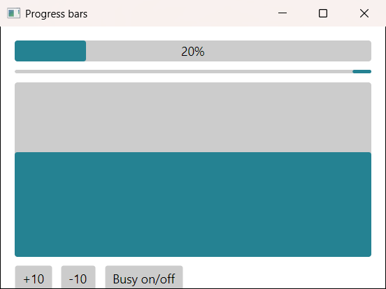
Progress bars
Progress bars: horizontal, vertical, with a text, and indeterminate; a button advances them
cd samples/UsingDotNet/tests/packages/AvaloniaSamples then ring 43_progress_bars.ringSource code
# Progress bars: horizontal, vertical, with a text, and indeterminate; a button advances them
load "avalonia.ring"
avUse()
oWindow = avWindow("Progress bars",440,300)
oPanel = avStack(10,16)
oWindow.Content = oPanel
oBar = new ProgressBar()
oBar {
Minimum = 0
Maximum = 100
Value = 20
ShowProgressText = True
ProgressTextFormat = "{1:0}%"
Height = 24
}
oBusy = new ProgressBar()
oBusy.IsIndeterminate = True
oVertical = new ProgressBar()
oVertical {
Orientation = "Vertical"
Minimum = 0
Maximum = 100
Value = 60
Height = 100
}
oRow = avRow(10)
oRow {
Children.Add(avButton("+10","advance(10)"))
Children.Add(avButton("-10","advance(-10)"))
Children.Add(avButton("Busy on/off","toggleBusy()"))
}
oPanel {
Children.Add(oBar)
Children.Add(oBusy)
Children.Add(oVertical)
Children.Add(oRow)
}
avRun(oWindow)
# --------------------------------------------------------------------------
func advance nStep
oBar.Value = min(100,max(0,oBar.Value + nStep))
oVertical.Value = oBar.Value
func toggleBusy
oBusy.IsIndeterminate = not oBusy.IsIndeterminate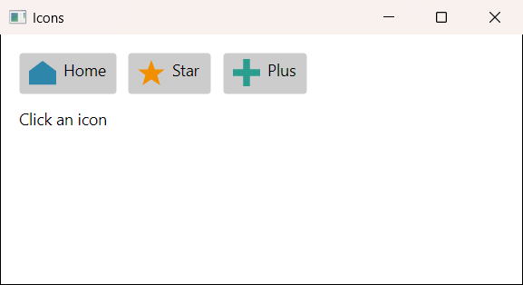
Path icons
Icons made from path text (PathIcon): buttons with an icon and a text; the icon color follows the button
cd samples/UsingDotNet/tests/packages/AvaloniaSamples then ring 44_path_icons.ringSource code
# Icons made from path text (PathIcon): buttons with an icon and a text; the icon color follows the button
load "avalonia.ring"
avUse()
oWindow = avWindow("Icons",460,220)
oPanel = avStack(12,16)
oWindow.Content = oPanel
oRow = avRow(10)
aIcons = []
oRow {
Children.Add(iconButton("Home","M10,20 L10,40 L50,40 L50,20 L30,5 Z","#2E86AB"))
Children.Add(iconButton("Star","M25,2 L31,18 L48,18 L35,28 L40,45 L25,35 L10,45 L15,28 L2,18 L19,18 Z","#F18F01"))
Children.Add(iconButton("Plus","M20,5 L30,5 L30,20 L45,20 L45,30 L30,30 L30,45 L20,45 L20,30 L5,30 L5,20 L20,20 Z","#2A9D8F"))
}
oInfo = avText("Click an icon")
oPanel {
Children.Add(oRow)
Children.Add(oInfo)
}
avRun(oWindow)
# --------------------------------------------------------------------------
# a button with an icon and a text
func iconButton cName, cPath, cColor
oIcon = new PathIcon()
oIcon.Data = (new Geometry).Parse(cPath)
oIcon.Foreground = avBrush(cColor)
oIcon.Width = 24
oIcon.Height = 24
aIcons + oIcon
oContent = avRow(6)
oContent.Children.Add(oIcon)
oContent.Children.Add(avText(cName))
oButton = avButton("","clicked('" + cName + "')")
oButton.Content = oContent
return oButton
func clicked cName
oInfo.Text = "You clicked " + cName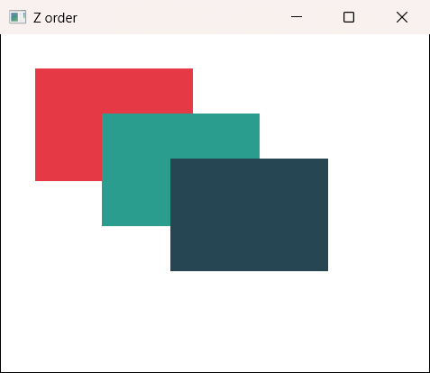
Canvas zindex
Overlapping shapes on a canvas: the Z index tells which one is in front; a click brings a shape to the front
cd samples/UsingDotNet/tests/packages/AvaloniaSamples then ring 45_canvas_zindex.ringSource code
# Overlapping shapes on a canvas: the Z index tells which one is in front; a click brings a shape to the front
load "avalonia.ring"
avUse()
oWindow = avWindow("Z order",380,300)
oCanvas = new Canvas()
oWindow.Content = oCanvas
aShapes = []
aColors = ["#E63946","#2A9D8F","#264653"]
nTop = 3
for nShape = 1 to 3
oBox = new Rectangle()
oBox {
Width = 140
Height = 100
Fill = avBrush(aColors[nShape])
setPointerPressedEvent("front(" + nShape + ")")
}
oCanvas.SetLeft(oBox,30 + (nShape - 1) * 60)
oCanvas.SetTop(oBox,30 + (nShape - 1) * 40)
oBox.ZIndex = nShape
oCanvas.Children.Add(oBox)
aShapes + oBox
next
avRun(oWindow)
# --------------------------------------------------------------------------
# a shape comes in front of the others
func front nShape
nTop++
aShapes[nShape].ZIndex = nTop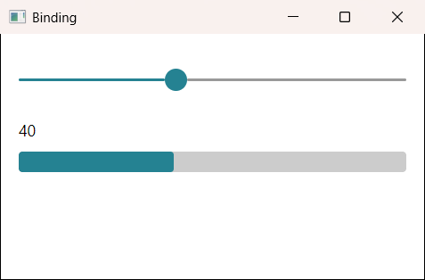
Binding
Bindings: a text that follows the value of a slider, with no code that runs when the slider moves (the binding of Avalonia does the work)
cd samples/UsingDotNet/tests/packages/AvaloniaSamples then ring 47_binding.ringSource code
# Bindings: a text that follows the value of a slider, with no code that runs when the slider moves (the binding of Avalonia does the work)
load "avalonia.ring"
avUse()
oWindow = avWindow("Binding",380,220)
oPanel = avStack(10,16)
oWindow.Content = oPanel
oSlider = new Slider()
oSlider {
Minimum = 0
Maximum = 100
Value = 40
}
oValue = new TextBlock()
oBar = new ProgressBar()
oBar {
Minimum = 0
Maximum = 100
Height = 18
}
# the text and the bar read the property Value of the slider
oValueBinding = (new Binding).@New("Value")
oValueBinding.Source = oSlider
oValue.Bind([ :property = oValue.TextProperty, :binding = oValueBinding ])
oBarBinding = (new Binding).@New("Value")
oBarBinding.Source = oSlider
oBar.Bind([ :property = oBar.ValueProperty, :binding = oBarBinding ])
oPanel {
Children.Add(oSlider)
Children.Add(oValue)
Children.Add(oBar)
}
avRun(oWindow)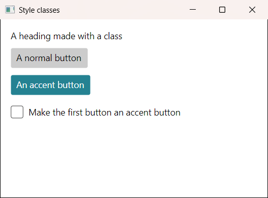
Style classes
Style classes: the Classes of a control choose styles of the theme (accent buttons, a heading); a check box adds and removes a class
cd samples/UsingDotNet/tests/packages/AvaloniaSamples then ring 48_style_classes.ringSource code
# Style classes: the Classes of a control choose styles of the theme (accent buttons, a heading); a check box adds and removes a class
load "avalonia.ring"
avUse()
oWindow = avWindow("Style classes",420,280)
oPanel = avStack(10,16)
oWindow.Content = oPanel
oHeading = avText("A heading made with a class")
oHeading.Classes.Add("h1")
oNormal = avButton("A normal button","")
oAccent = avButton("An accent button","")
oAccent.Classes.Add("accent")
oSwitch = new CheckBox()
oSwitch.Content = "Make the first button an accent button"
oSwitch.setIsCheckedChangedEvent("switched()")
oPanel {
Children.Add(oHeading)
Children.Add(oNormal)
Children.Add(oAccent)
Children.Add(oSwitch)
}
avRun(oWindow)
# --------------------------------------------------------------------------
func switched
if oSwitch.IsChecked
oNormal.Classes.Add("accent")
else
oNormal.Classes.Remove("accent")
ok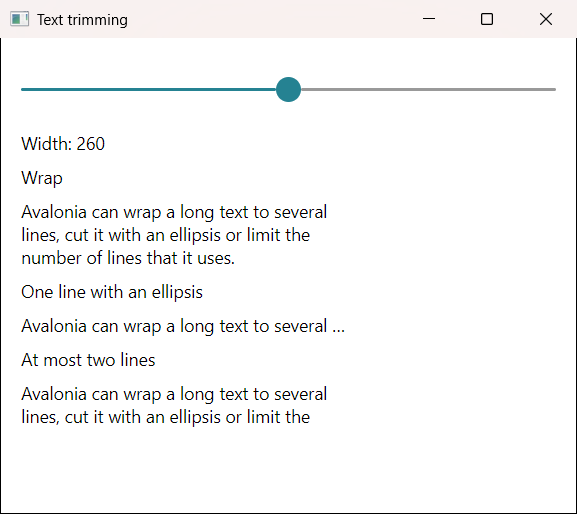
Text trimming
Long text in a narrow space: wrapping, trimming with an ellipsis and a limit of lines; a slider changes the width
cd samples/UsingDotNet/tests/packages/AvaloniaSamples then ring 49_text_trimming.ringSource code
# Long text in a narrow space: wrapping, trimming with an ellipsis and a limit of lines; a slider changes the width
load "avalonia.ring"
avUse()
cLong = "Avalonia can wrap a long text to several lines, cut it with an ellipsis or limit the number of lines that it uses."
oWindow = avWindow("Text trimming",460,380)
oPanel = avStack(8,16)
oWindow.Content = oPanel
oWidth = new Slider()
oWidth {
Minimum = 100
Maximum = 420
Value = 260
setValueChangedEvent("resize()")
}
oWidthText = avText("")
oWrapped = sample("Wrap","None",0)
oTrimmed = sample("NoWrap","CharacterEllipsis",0)
oLimited = sample("Wrap","CharacterEllipsis",2)
oPanel {
Children.Add(oWidth)
Children.Add(oWidthText)
Children.Add(avText("Wrap"))
Children.Add(oWrapped)
Children.Add(avText("One line with an ellipsis"))
Children.Add(oTrimmed)
Children.Add(avText("At most two lines"))
Children.Add(oLimited)
}
resize()
avRun(oWindow)
# --------------------------------------------------------------------------
func sample cWrapping, cTrimming, nLines
oText = new TextBlock()
oText.Text = cLong
oText.TextWrapping = cWrapping
oText.TextTrimming = dnType("Avalonia.Media.TextTrimming, Avalonia.Base").getProp(cTrimming)
if nLines > 0
oText.MaxLines = nLines
ok
oText.HorizontalAlignment = "Left"
return oText
func resize
if not isobject(oLimited)
return
ok
nWidth = floor(oWidth.Value)
oWidthText.Text = "Width: " + nWidth
oWrapped.Width = nWidth
oTrimmed.Width = nWidth
oLimited.Width = nWidth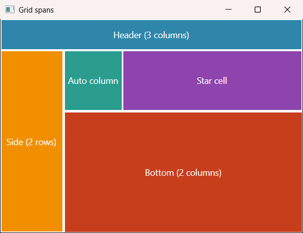
Grid spans
A grid with rows and columns of different sizes (fixed, auto and star) and children that span several cells
cd samples/UsingDotNet/tests/packages/AvaloniaSamples then ring 50_grid_spans.ringSource code
# A grid with rows and columns of different sizes (fixed, auto and star) and children that span several cells
load "avalonia.ring"
avUse()
oWindow = avWindow("Grid spans",480,340)
oGrid = new Grid()
oGrid.ColumnDefinitions = (new ColumnDefinitions).Parse("100,Auto,*")
oGrid.RowDefinitions = (new RowDefinitions).Parse("50,*,2*")
oWindow.Content = oGrid
oHeader = cell("Header (3 columns)","#2E86AB")
oGrid.SetColumnSpan(oHeader,3)
oSide = cell("Side (2 rows)","#F18F01")
oGrid.SetRow(oSide,1)
oGrid.SetRowSpan(oSide,2)
oAuto = cell("Auto column","#2A9D8F")
oAuto.Width = 90
oGrid.SetRow(oAuto,1)
oGrid.SetColumn(oAuto,1)
oFill = cell("Star cell","#8E44AD")
oGrid.SetRow(oFill,1)
oGrid.SetColumn(oFill,2)
oBottom = cell("Bottom (2 columns)","#C73E1D")
oGrid.SetRow(oBottom,2)
oGrid.SetColumn(oBottom,1)
oGrid.SetColumnSpan(oBottom,2)
oGrid {
Children.Add(oHeader)
Children.Add(oSide)
Children.Add(oAuto)
Children.Add(oFill)
Children.Add(oBottom)
}
avRun(oWindow)
# --------------------------------------------------------------------------
func cell cText, cColor
oBorder = new Border()
oBorder.Background = avBrush(cColor)
oBorder.Margin = avThickness(2)
oLabel = avText(cText)
oLabel.Foreground = avBrush("White")
oLabel.HorizontalAlignment = "Center"
oLabel.VerticalAlignment = "Center"
oBorder.Child = oLabel
return oBorderOpacity visibility
Opacity, visibility and enabled: a slider fades a box, check boxes hide and disable a button; a hidden control leaves its space
cd samples/UsingDotNet/tests/packages/AvaloniaSamples then ring 51_opacity_visibility.ringSource code
# Opacity, visibility and enabled: a slider fades a box, check boxes hide and disable a button; a hidden control leaves its space
load "avalonia.ring"
avUse()
oWindow = avWindow("Opacity and visibility",420,320)
oPanel = avStack(10,16)
oWindow.Content = oPanel
oBox = new Border()
oBox {
Height = 60
Background = avBrush("#2E86AB")
CornerRadius = (new CornerRadius).Parse("8")
}
oOpacity = new Slider()
oOpacity {
Minimum = 0
Maximum = 1
Value = 1
setValueChangedEvent("faded()")
}
oOpacityText = avText("")
oButton = avButton("A button","clicked()")
oVisible = check("Visible",True)
oEnabled = check("Enabled",True)
oClicks = avText("Clicks: 0")
nClicks = 0
oPanel {
Children.Add(oBox)
Children.Add(oOpacity)
Children.Add(oOpacityText)
Children.Add(oVisible)
Children.Add(oEnabled)
Children.Add(oButton)
Children.Add(oClicks)
}
faded()
avRun(oWindow)
# --------------------------------------------------------------------------
func check cText, lChecked
oBoxCheck = new CheckBox()
oBoxCheck.Content = cText
oBoxCheck.IsChecked = lChecked
oBoxCheck.setIsCheckedChangedEvent("changed()")
return oBoxCheck
func faded
if isobject(oOpacityText)
oBox.Opacity = oOpacity.Value
oOpacityText.Text = "Opacity: " + (floor(oOpacity.Value * 100 + 0.5) / 100)
ok
func changed
if isobject(oEnabled)
oButton.IsVisible = oVisible.IsChecked
oButton.IsEnabled = oEnabled.IsChecked
ok
func clicked
nClicks++
oClicks.Text = "Clicks: " + nClicksAlignment margins
Alignment and margins: a box in a bigger space; the alignments and the margin change where it is and how big (a layout lab)
cd samples/UsingDotNet/tests/packages/AvaloniaSamples then ring 52_alignment_margins.ringSource code
# Alignment and margins: a box in a bigger space; the alignments and the margin change where it is and how big (a layout lab)
load "avalonia.ring"
avUse()
oWindow = avWindow("Alignment",480,400)
oDock = new DockPanel()
oWindow.Content = oDock
oControls = avStack(6,10)
oControls.Width = 150
oDock.SetDock(oControls,"Left")
oHorizontal = choice(["Left","Center","Right","Stretch"],"horizontalChanged()")
oVertical = choice(["Top","Center","Bottom","Stretch"],"verticalChanged()")
oMargin = new Slider()
oMargin {
Minimum = 0
Maximum = 40
Value = 0
setValueChangedEvent("marginChanged()")
}
oInfo = avText("")
oInfo.TextWrapping = "Wrap"
oControls {
Children.Add(avText("Horizontal"))
Children.Add(oHorizontal)
Children.Add(avText("Vertical"))
Children.Add(oVertical)
Children.Add(avText("Margin"))
Children.Add(oMargin)
Children.Add(oInfo)
}
oSpace = new Border()
oSpace.Background = avBrush("#EEEEEE")
oBox = new Border()
oBox {
Width = 100
Height = 70
Background = avBrush("#2E86AB")
}
oSpace.Child = oBox
oDock {
Children.Add(oControls)
Children.Add(oSpace)
}
avRun(oWindow)
# --------------------------------------------------------------------------
func choice aNames, cCode
oList = new ComboBox()
for cName in aNames
oList.Items.Add(cName)
next
oList.SelectedIndex = 0
oList.setSelectionChangedEvent(cCode)
return oList
func horizontalChanged
if isobject(oBox) and oHorizontal.SelectedIndex >= 0
oBox.HorizontalAlignment = oHorizontal.SelectedItem
ok
func verticalChanged
if isobject(oBox) and oVertical.SelectedIndex >= 0
oBox.VerticalAlignment = oVertical.SelectedItem
ok
func marginChanged
if isobject(oBox)
oBox.Margin = avThickness(floor(oMargin.Value))
ok
func layout
oSpace.InvalidateMeasure()
oSpace.Measure((new Size).@New([ :width = 300, :height = 300 ]))
oSpace.Arrange((new Rect).Parse("0,0,300,300"))
oInfo.Text = "The box is at " + floor(oBox.Bounds.X) + ", " + floor(oBox.Bounds.Y) + " and " + floor(oBox.Bounds.Width) + " x " + floor(oBox.Bounds.Height)